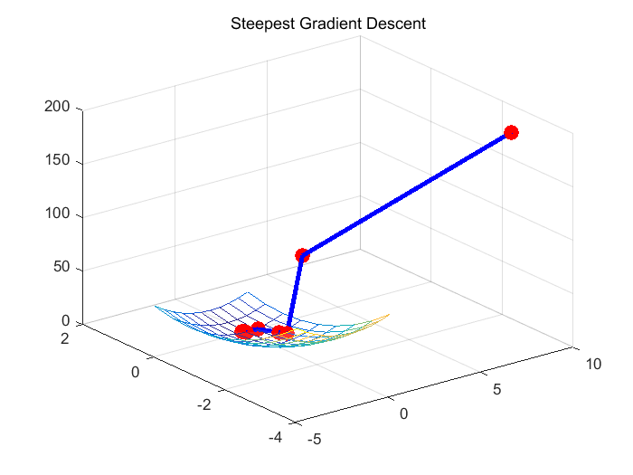
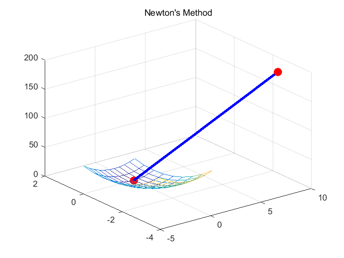
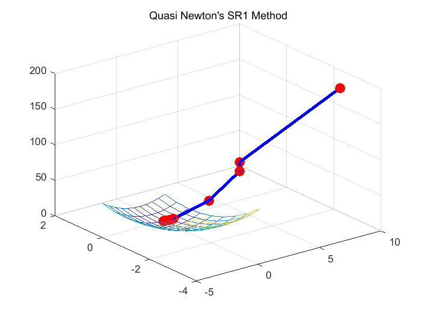
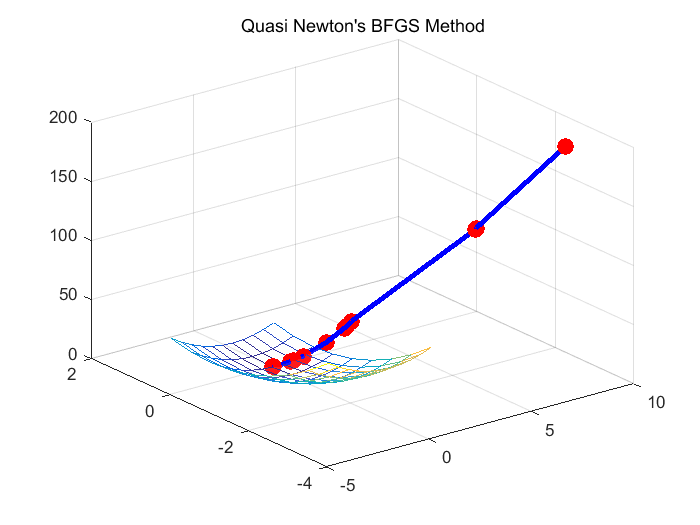

Contents
clc;
clear;
close all;
max_iter = 5000;
epsilon = 0.001;
Problem 1 - find minima f(x, y) = 2*x^2 + 5*y^2
syms x y;
f = symfun(2*x^2 + 5*y^2, [x y]);
f_gradient = gradient(f);
f_hessian = hessian(f, [x y]);
point = -10 + (10 + 10) * rand(1, 2);
[min_point, output, time, iter] = gradient_descent(f, f_gradient, point, epsilon, max_iter);
fprintf('1. Gradient Descent - It takes %fsec to generate minimum [%f] in (x,y) = (%f,%f) for %d iter\n', time, output, min_point(1), min_point(2), iter);
[min_point, output, time, iter] = newton_method(f, f_gradient, f_hessian, point, epsilon, max_iter);
fprintf('2. Newton''s Method - It takes %fsec to generate minimum [%f] in (x,y) = (%f,%f) for %d iter\n', time, output, min_point(1), min_point(2), iter);
[min_point, output, time, iter] = quasi_newton_sr1_method(f, f_gradient, point, epsilon, max_iter);
fprintf('3. Quasi Newton''s SR1 Method - It takes %fsec to generate minimum [%f] in (x,y) = (%f,%f) for %d iter\n', time, output, min_point(1), min_point(2), iter);
[min_point, output, time, iter] = quasi_newton_bfgs_method(f, f_gradient, point, epsilon, max_iter);
fprintf('4. Quasi Newton''s BFGS Method - It takes %fsec to generate minimum [%f] in (x,y) = (%f,%f) for %d iter\n', time, output, min_point(1), min_point(2), iter);
1. Gradient Descent - It takes 0.906996sec to generate minimum [0.000172] in (x,y) = (-0.004677,0.005059) for 10 iter
2. Newton's Method - It takes 0.052264sec to generate minimum [0.000000] in (x,y) = (0.000000,0.000000) for 2 iter
3. Quasi Newton's SR1 Method - It takes 0.576486sec to generate minimum [0.000144] in (x,y) = (-0.008354,0.000886) for 9 iter
4. Quasi Newton's BFGS Method - It takes 0.897484sec to generate minimum [0.000166] in (x,y) = (0.009085,-0.000499) for 12 iter
   